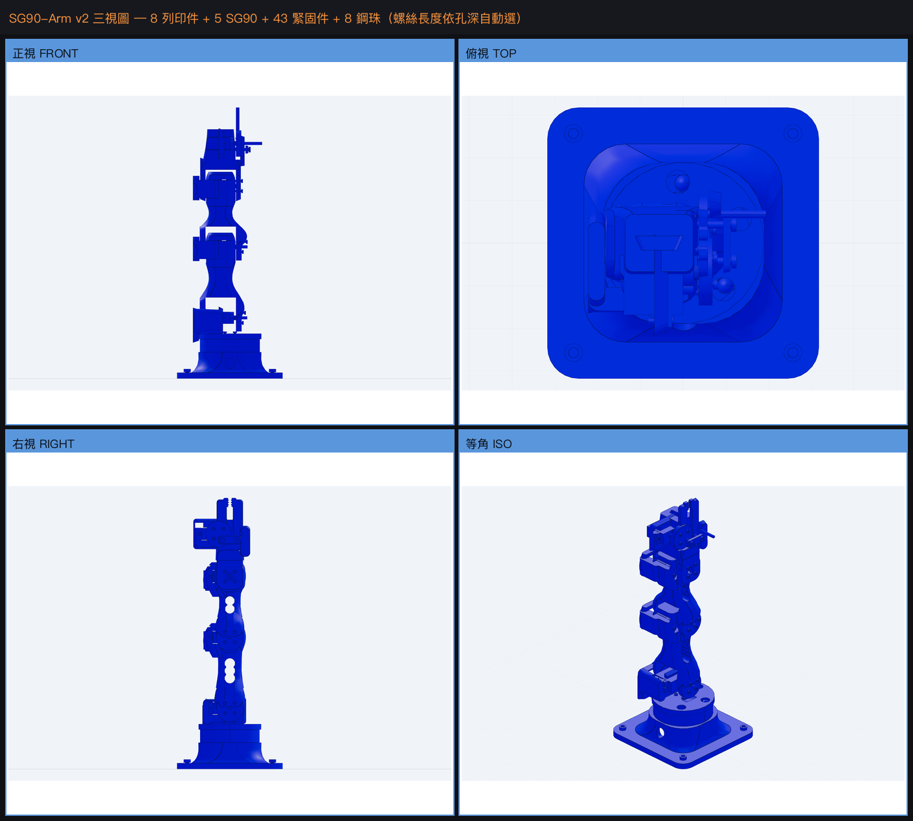

5 軸伺服機械手臂
text-to-CAD → URDF → 物理模擬 → Arduino 韌體

| NO. | 致動器 | 規格 | 說明 | 存取 |
|---|---|---|---|---|
| 01 | SG90-Arm | 202 mm / 酬載 4 g | 第一支：5 軸微型伺服。幾何量測、伺服訊號鏈模型、扭矩包絡、v2 機構重繪與製作前調查。 | VIEW ↗ |
| 02 | NEMA17-Arm | 255 mm / GT2 3:1 | 第二支：42 型步進、遠端傳動。失步是永久的——A1–A5 全流程與那四個「會跑、會印數字」的錯模型。 | VIEW ↗ |
| 03 | FT5425BL-Arm | 190 mm / 酬載 100 g | 第三支：標準舵機、直接驅動。伸距由連續額定而非堵轉決定。 | VIEW ↗ |
| 04 | STS3215-Arm | 212 mm / 酬載 100 g | 第四支：匯流排舵機、有位置回授。五支裡第一支報得出真實位置的——閉環驗證從這裡開始。 | VIEW ↗ |
| 05 | DM-J4310-Arm | 173 mm / 酬載 500 g | 第五支：準直驅、力矩回授。CAN 協定層、CAD、URDF/MJCF 與力矩控制模擬皆完成；法蘭安裝方式不同，結構是另一套。 | VIEW ↗ |
| REF. | 模組 | 說明 | 存取 |
|---|---|---|---|
| M1 | Arduino 沙盒 | 寫 servo.write() 控制手臂。邊打字邊看 3D 運動學預覽，一鍵送去 MuJoCo 跑真實物理，可匯出 .ino 燒錄。 |
EXEC ↗ |
| M2 | 正向 vs 逆向運動學 | 同一支手臂、同一組物理、同一個任務，兩種思考方式並排：左寫關節角度，右寫末端座標，疊在同一個視圖比軌跡。 | EXEC ↗ |
| M3 | 驗證系統 | 12 層測試（幾何／解析解／不變量／蛻變／差異／收斂／性質／回歸／可組裝／可列印／網頁／靜態發布）共 567 項，外加變異測試驗證這套測試本身有效。 | READ ↗ |
| M4 | 可行性報告 | 外部方案調查與待確認決策：步進發步率、舵機軌跡規劃、扭矩資料來源、以及要不要換成有回授的匯流排舵機。 | READ ↗ |
| M5 | 專案記錄頁 | 完整過程：SG90 幾何量測、手臂設計、模擬環境調查、扭矩分析、模擬影片，以及 66 項失敗紀錄與已知限制。 | READ ↗ |
兩個互動頁在窄螢幕會自動改成上下堆疊（編輯器在上、3D 視圖在下）。3D 視圖單指拖曳可旋轉、雙指縮放。程式碼編輯在手機上可用但不好打字，建議手機看模擬、電腦寫程式。
# 啟動（前景）
cd ~/3d/servo-arm/sim && ../.venv/bin/python serve_playground.py
# 只綁本機，不對 Tailscale 開放
../.venv/bin/python serve_playground.py --no-tailscale
# 遠端再加一層密碼
../.venv/bin/python serve_playground.py --auth可用：Arduino 程式碼編譯、時間軸、3D 運動學預覽、匯出 .ino、以及完整的專案記錄。
需要本機伺服器：「送去 MuJoCo 跑物理」——真實物理是在本機跑 MuJoCo，沒有辦法放在靜態主機上。下方影片是本機實跑錄下來的結果，不是動畫。